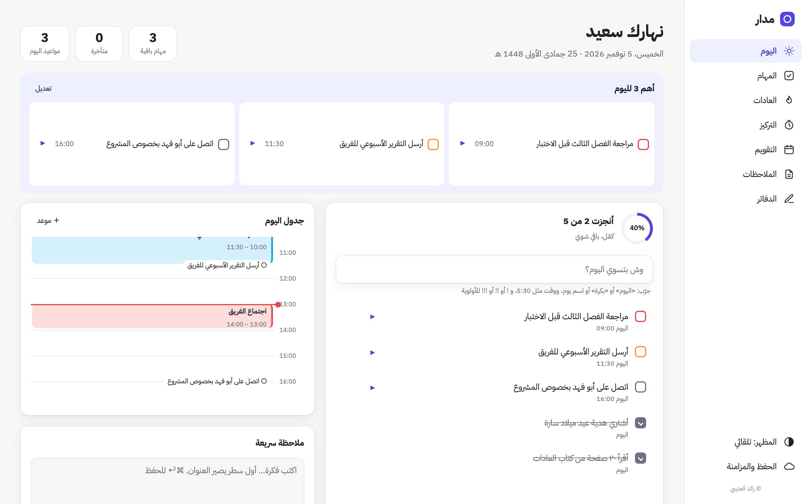
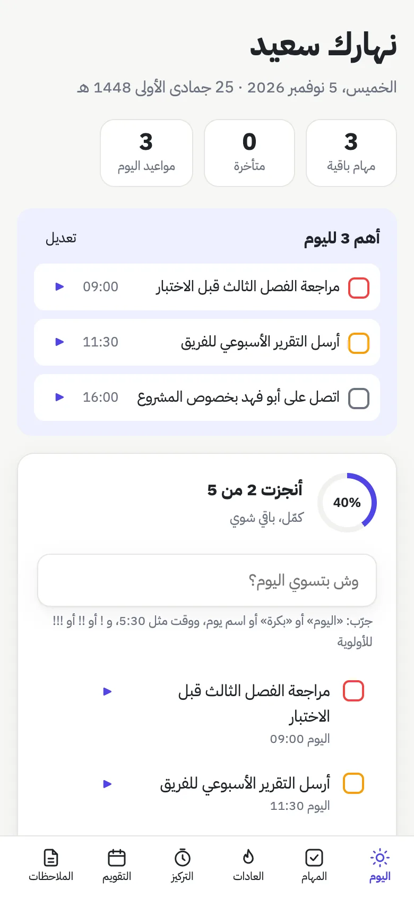
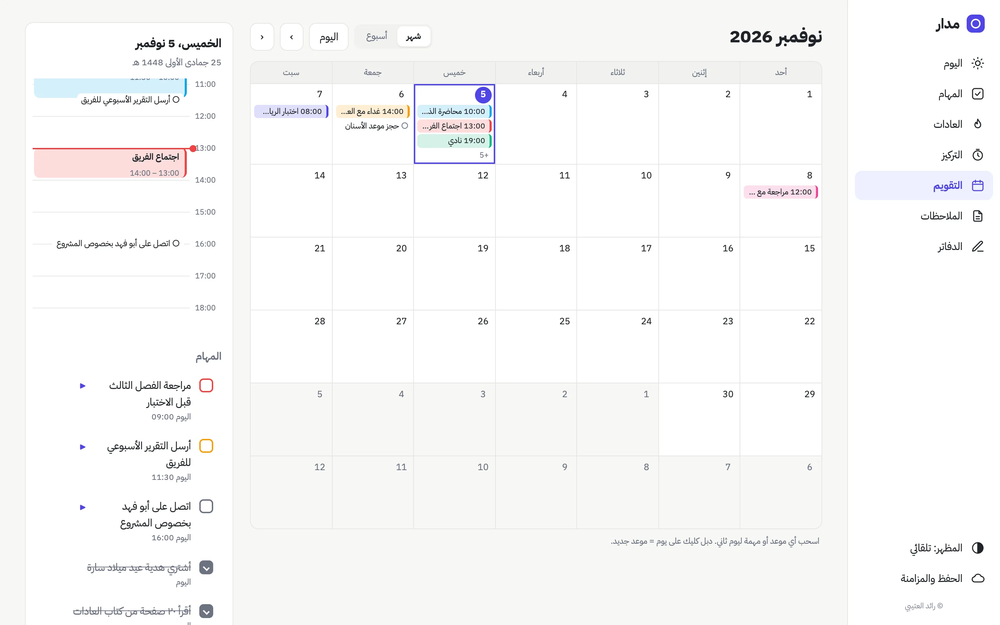
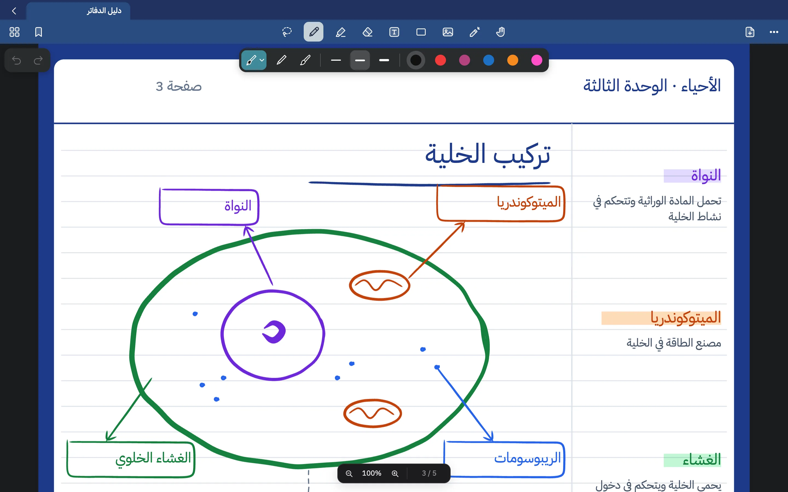
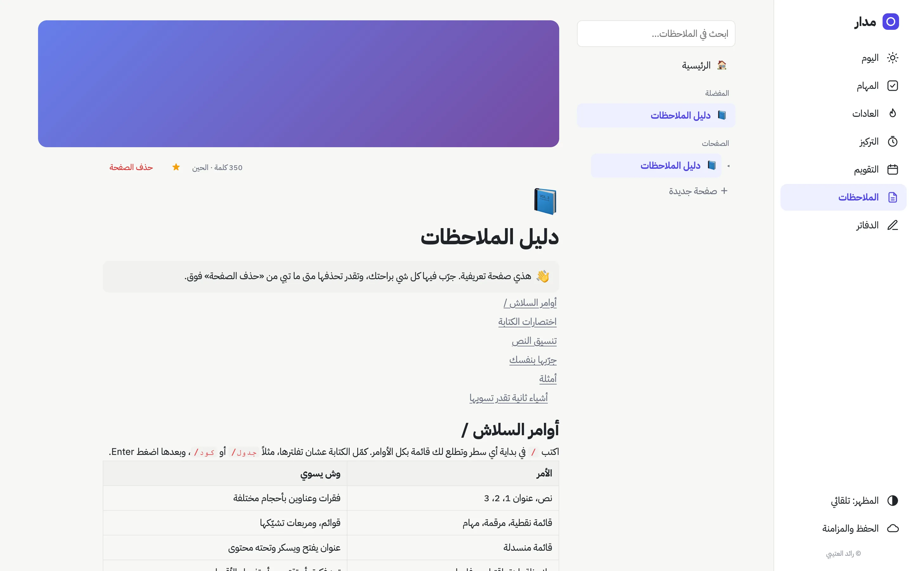
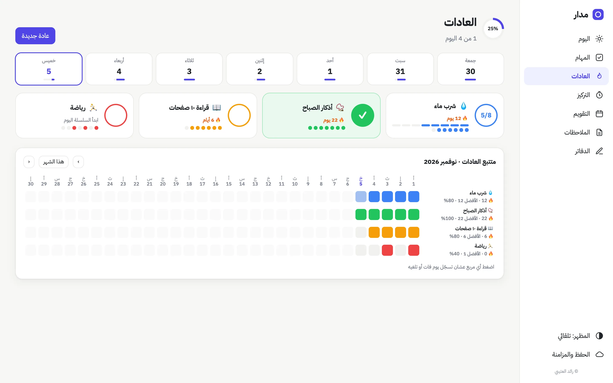
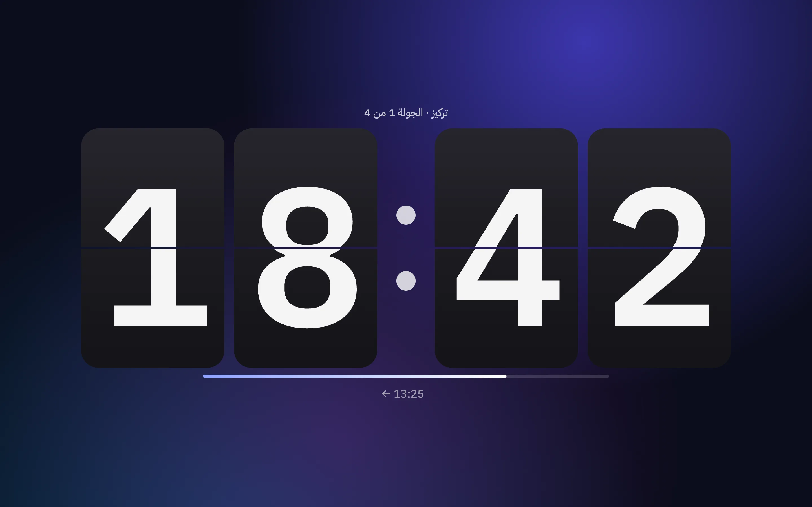
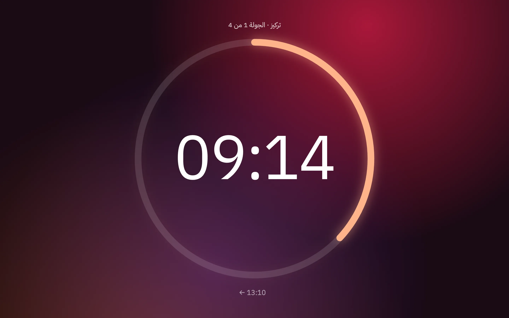

يومك كله
في مدار واحد
مهامك، وتقويمك، وملاحظاتك، ودفاترك بخط اليد، وعاداتك، ومؤقت للمذاكرة. كلها في تطبيق واحد بالعربي، بدل ما تتنقل بين أربع تطبيقات.
ماك · ويندوز · آيباد · آيفون · بدون حساب، وبياناتك على جهازك


افتح التطبيق وتعرف وش عندك
أهم ثلاث مهام، وجدول يومك بالساعات، والمتأخر، وعاداتك، كلها في صفحة وحدة. وتكتب المهمة بكلامك العادي، ومدار يفهم التاريخ والوقت والأولوية.
- «اتصل بأحمد بكرة 5:30 !!» تصير مهمة بموعد وأولوية
- مهام تتكرر: كل يوم، أو أيام الدوام، أو أيام تختارها
- مهام الأسبوع، وإذا يومك فاضي يقترح لك منها
- خطة الصباح ومراجعة آخر اليوم في دقيقة

اكتب بالقلم كأنك على ورق
دفاتر تكتب فيها بقلم Apple أو الماوس، بأقلام تتأثر بالضغط. وتستورد كتب PDF وتكتب عليها، وتحتفظ بكل ملخصاتك في مكان واحد.
- قلم حبر وقلم جاف وفرشاة، وقلم تظليل وممحاة
- شخبط فوق الكلمة وتنمسح، وارسم شكل واثبت وينضبط
- ليزر للشرح، وأداة تحديد، وصور، ومربعات نص
- قوالب ورق ومخططات جاهزة، وتصدير PDF

صفحات تكتب فيها اللي تبي
اكتب / وتطلع لك كل الأوامر: عناوين، ومهام، وجداول، وكود، ومعادلات، وصفحات داخل صفحات. وكل سطر يمشي مع لغته: العربي من اليمين والإنقليزي من اليسار.
- قوالب: اجتماع، يوميات، مذاكرة، مشروع، خطة أسبوع
- صور، وفيديو، وملفات PDF تنعرض داخل الصفحة
- بحث، ومفضلة، وأغلفة وأيقونات للصفحات

عادات صغيرة، كل يوم
سجّل عاداتك بضغطة، وشوف سلسلتك 🔥 وهي تكبر. العادة اللي مو لها اليوم تختفي، والمتتبع الشهري يوريك وين كنت ثابت.
- هدف بعدد مرات، مثل ٨ أكواب ماء
- أيام محددة، وتخفي عادة ليوم واحد بدون ما تنكسر السلسلة

شاشتك كلها للمذاكرة
بومودورو أو مؤقت أو ساعة إيقاف، بملء الشاشة. اختر من ستة أشكال: رقمي، وقلّاب، ودائرة، وقرص، وليد، وموج. وشغّل صوت هادي يعزلك عن اللي حولك.


وأشياء ثانية تفرق
كل شي على جهازك، والنت بس للمزامنة.
عن طريق قوقل درايف حقك. ماك وويندوز وآيباد وآيفون.
التاريخ الهجري جنب الميلادي في كل مكان.
مهام اليوم والتقويم والملاحظات من أعلى الشاشة بدون ما تفتح التطبيق.
مواعيدك ومهامك تطلع في تقويم الماك، وفي تطبيقات مثل Boring Notch.
يتبع جهازك، أو تختار أنت.
ما فيه حساب، ولا إعلانات، ولا ذكاء اصطناعي يقرأ بياناتك.
الكود كامل على GitHub، وتقدر تشوفه وتعدل عليه.
حمّل مدار
مجاني على كل الأجهزة.
أول مرة تفتحه
اسحب مدار لمجلد التطبيقات. وأول مرة: كليك يمين على التطبيق ← فتح ← فتح، لأنه مو موقّع من Apple.
إذا طلع تحذير
إذا طلعت «Windows protected your PC»، اضغط More info وبعدها Run anyway.
حطه على الشاشة الرئيسية
افتحه من Safari، واضغط زر المشاركة ← إضافة إلى الشاشة الرئيسية. تطلع لك أيقونة مدار مثل أي تطبيق.
وين تنحفظ بياناتي؟
في متصفحك على نفس الجهاز. وتقدر تربطه بقوقل درايف عشان يتزامن مع أجهزتك الثانية.
أسئلة
هل مدار مجاني؟
إيه، مجاني بالكامل ومفتوح المصدر برخصة MIT. ما فيه اشتراك ولا إعلانات.
وين تنحفظ بياناتي؟
على جهازك. وإذا تبي تزامن بين أجهزتك، سجّل دخولك بقوقل من «الحفظ والمزامنة»، وتنحفظ نسخة في قوقل درايف حقك أنت، مو عندنا.
أقدر أستخدمه على الآيباد بقلم Apple؟
إيه. افتحه من Safari وحطه على الشاشة الرئيسية، والدفاتر تشتغل بالقلم مع الضغط، وإصبعك يحرّك الصفحة.
عندي ماك Intel، يشتغل؟
نسخة الماك حاليًا لأجهزة Apple Silicon (M1 وأحدث). على ماك Intel استخدمه من المتصفح، وكل شي يشتغل.
كيف يوصلني التحديث؟
على الماك والويندوز يطلع لك شريط «حدّث الحين» داخل التطبيق، يحدّث ويرجع يفتح لحاله. والمتصفح يتحدث لحاله.
فيه ذكاء اصطناعي؟
لا. مدار ما يرسل بياناتك لأي خدمة ذكاء اصطناعي.
لقيت مشكلة أو عندي فكرة
اكتبها في صفحة المشاكل على GitHub.